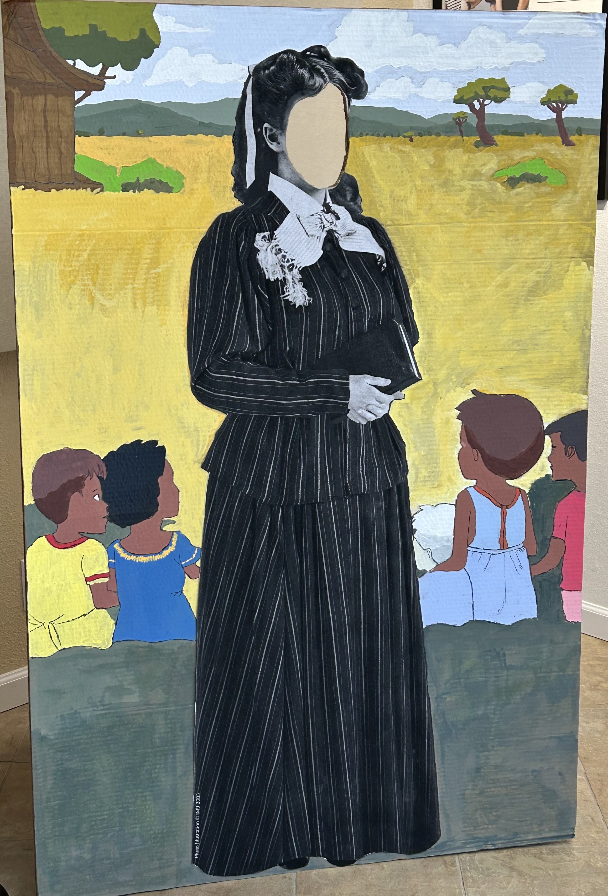
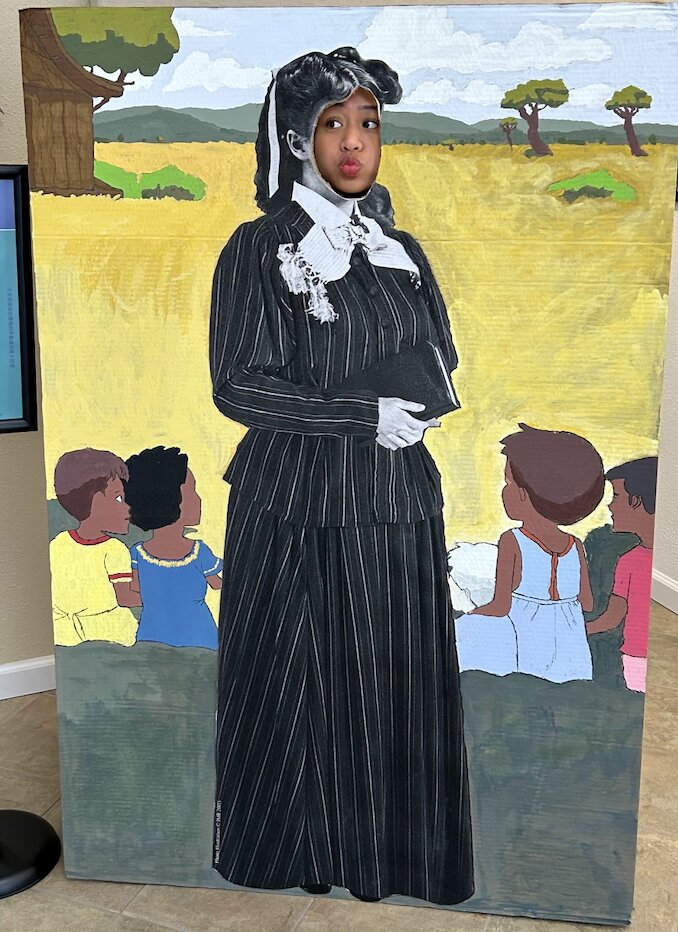
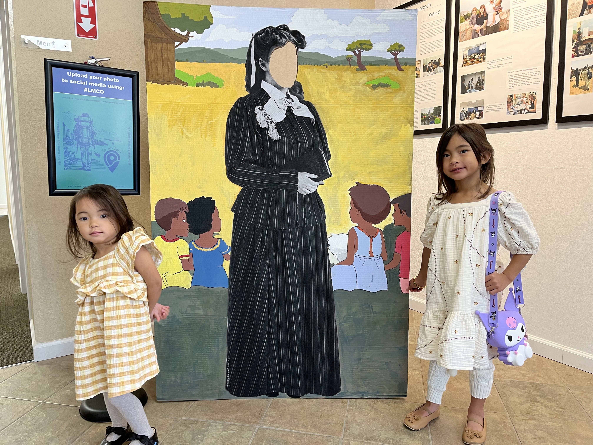
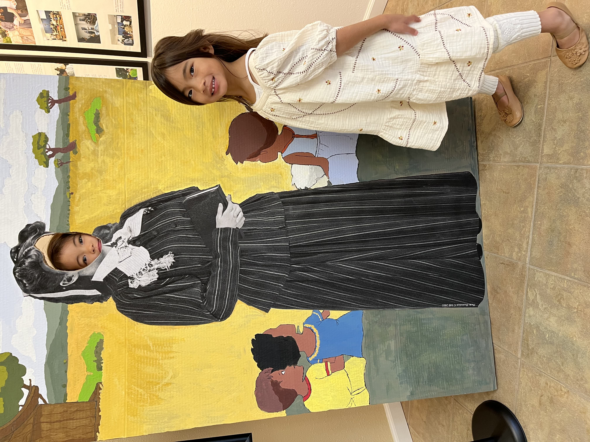
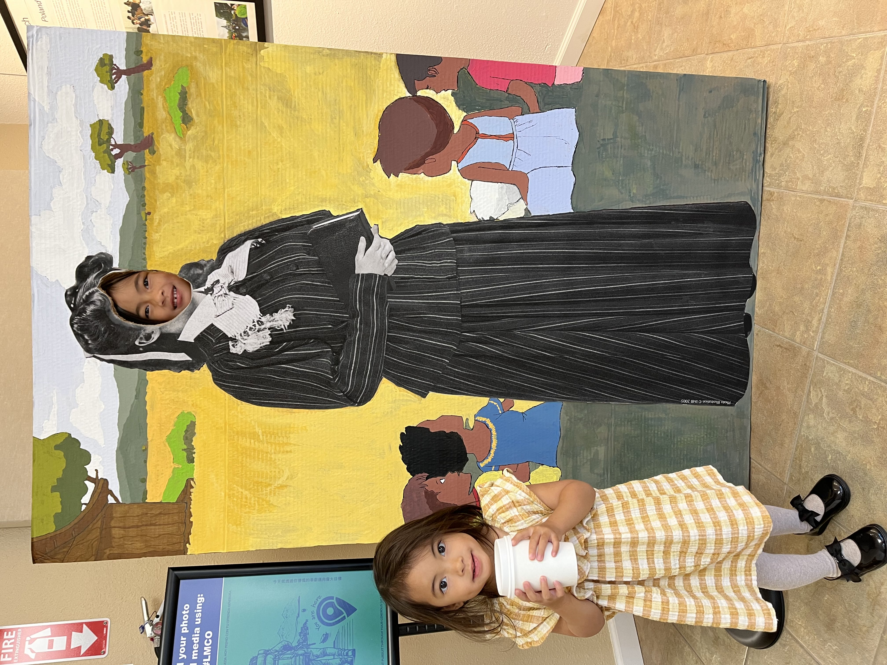

Lottie Moon (1840-1912) was an American Southern Baptist missionary who lived and spent nearly 40 years evangelizing in China. She is admired for her faith, her education of girls, and her advocacy against foot-binding. She is renowned for the annual Lottie Moon Christmas Offering for international missions.

Date: November 24, 2024



